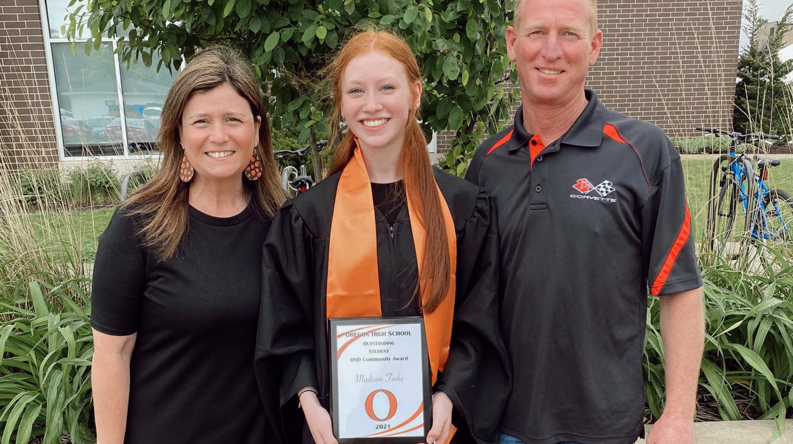
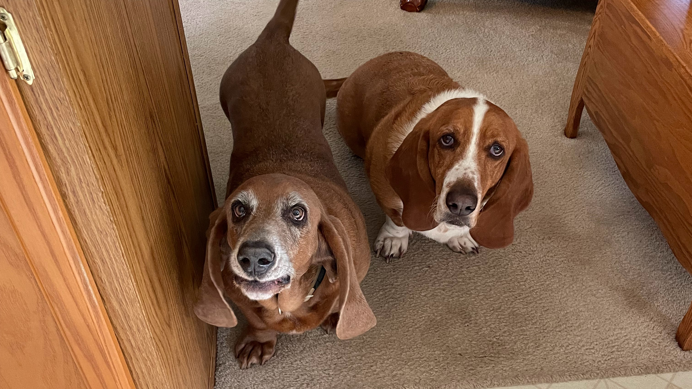
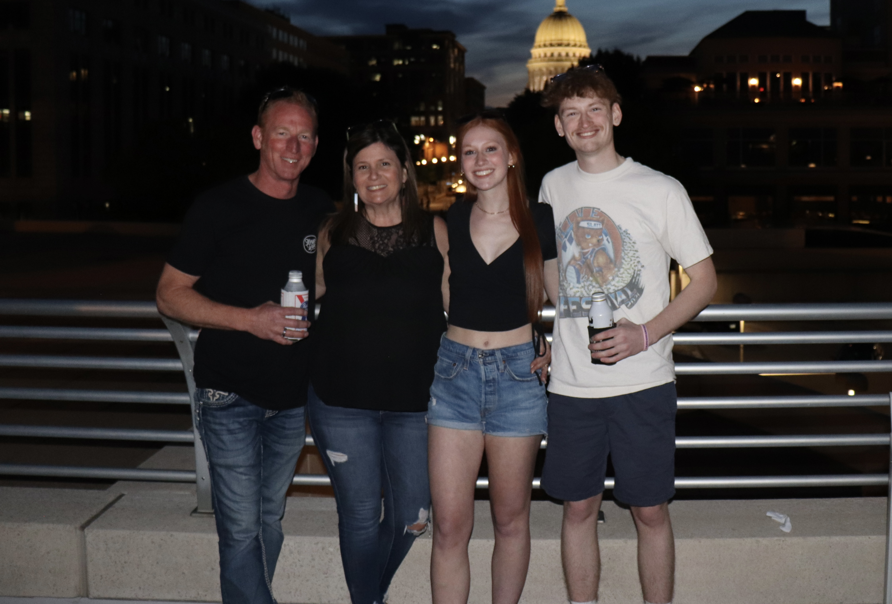
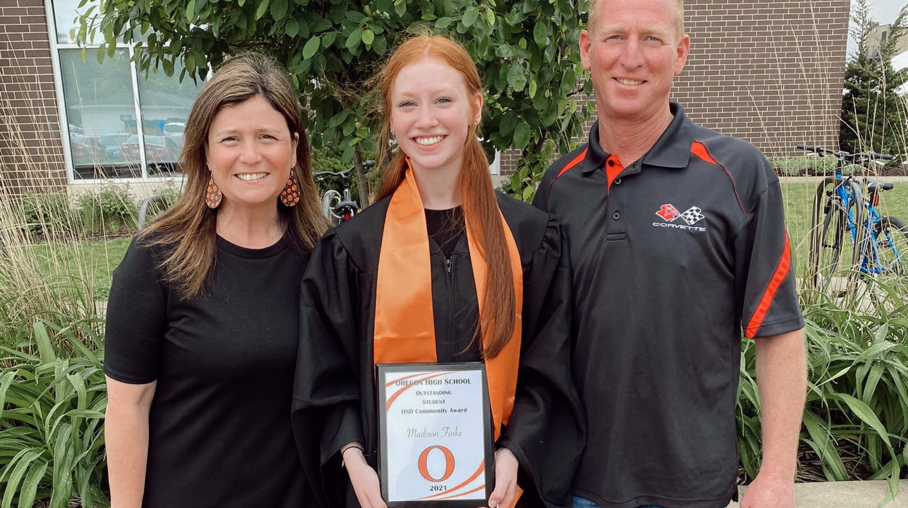
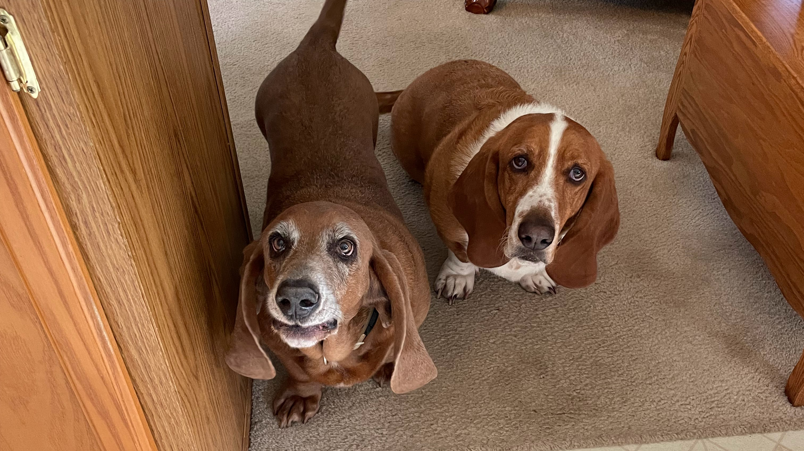
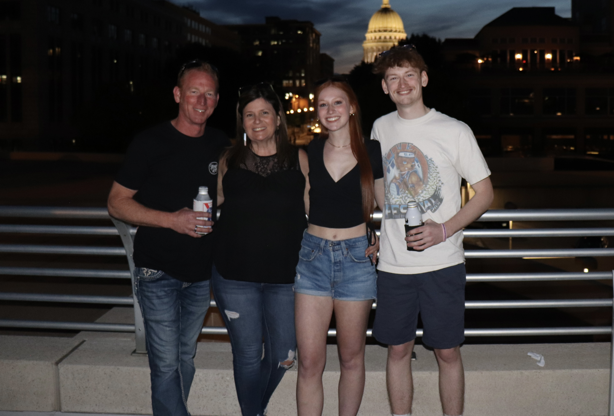

Welcome to my Portfolio!
My name is Madison Finke and I am currently a junior at UWEC. I have one brother, a couple cats, and two Bassett Hounds. My hometown is located in Brooklyn, Wisconsin which is about three hours south of Eau Claire. I have been modeling for a couple years but one thing I am passionate about most is social media and creating content. I started a YouTube channel when I was in 3rd grade which definitely pushed where I am today. I don't make videos anymore for my channel but I love watching the ones that I made with my friends in high school. I was considered the "YouTuber" at my school which never bothered me. During COVID-19, I helped our school district out with creating videos for guidelines on how to come back to in-person classes safely. From that my senior year I received a OSD Community Award. I now make videos for fun when I have the freetime and usually spill my creativity out now on social media related projects at school. I became a Social Media Assistant for a bakery the beginning of this year and will hopefully continue that throughout the summer.
Scroll down to watch my favorite video I made in high school!
Photos
 




